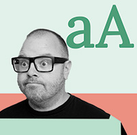

(About) Adrian Anderton
Adrian Anderton is a designer based in Sacramento, California. He is currently studying Graphic Design at Sierra College.
His striking style is built around the power of space, shapes, and color in a relational environment. This design style of Adrian's empowers his voice to be heard in a limitless approach with digital art, illustration, publication, and product branding.
When it comes to inspiration, Adrian gets a lot of inspiration in their garden. The building and creating of a garden is one thing. But the curation of plants and the symbyotic relationship that is required has revealed so many design opertunities for Adrian.
He shares their garden with his partner Stephanie, dog Uther, and several chickens.
In the video you can watch the evolution of their first homestead.